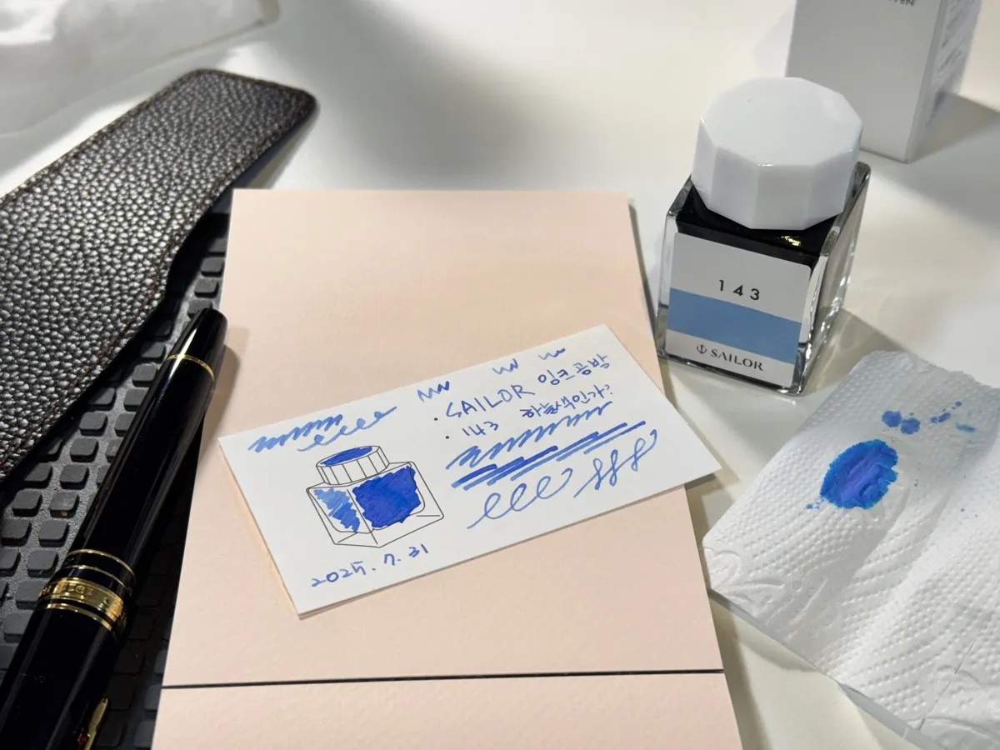

오늘도 뭔가 고치는 중 · OPEN
일단작업대에올려보세요.
영상이 멈췄든, 홈페이지가 길을 잃었든, 회사 일이 자꾸 손으로 돌아오든. 물건도 안 보고 이름부터 붙이지 않겠습니다.
접수표 세 장 보기 ↓
고장 난 물건은 안 고칩니다. 대신 안 보이고, 안 팔리고, 안 돌아가는 일을 봅니다.
27년 현장 · 8년 가게 · 6년 채널 · 아직도 직접 작업 중
영상 한 편매달 이어갈 채널길 잃은 홈페이지반복되는 회사 일
 실제 HAM MEDIA 작업대. 정리 전이 아니라 작업 중입니다.
실제 HAM MEDIA 작업대. 정리 전이 아니라 작업 중입니다.
접수표 01이 맞는 경우끝이 선명한
한 가지 일
원본과 꼭 들어갈 사실을 받아, 합의한 영상·페이지·콘텐츠 완성본으로 돌려드립니다.
- 고객이 올려놓을 것
- 원본 자료, 꼭 들어갈 사실, 원하는 완료 모습, 기존 채널이나 참고 화면
- 받아갈 것
- 합의한 완성본과 직접 확인할 수 있는 주소 또는 파일
- 먼저 적을 것
- 기간, 수정 횟수, 촬영·문안·썸네일·등록·유지관리의 포함 여부
- 가격 기준
- 롱폼 편집 20만 원부터. 홈페이지·이벤트 페이지는 범위 확인 뒤 서면 견적
 매달 필요한 건 유행어가 아니라, 계속 꺼낼 수 있는 기록입니다.
매달 필요한 건 유행어가 아니라, 계속 꺼낼 수 있는 기록입니다.
접수표 02가 맞는 경우혼자서는 자꾸
멈추는 운영
이번 달 바뀐 사실을 받아 주제·콘텐츠·게시·다음 판단으로 이어갑니다. 제작비와 운영비는 섞지 않습니다.
- 고객이 올려놓을 것
- 이번 달 바뀐 사실, 알릴 일, 원본, 민감하거나 전문적인 표현의 최종 확인
- 받아갈 것
- 합의한 월간 콘텐츠와 게시·관리 내역, 고객 반응과 다음 달 판단
- 월 50만 원 경계
- 기존 자료와 핵심 채널 중심으로 제작량·게시 범위를 작게 합의한 운영
- 가격이 달라질 때
- 신규 촬영, 이동, 다채널, 제작량 증가, 의료·법률 등 전문 검수

툴부터 사지 않습니다. 지금 일이 흐르는 순서를 먼저 그립니다.
접수표 03이 맞는 경우매번 손으로
되풀이하는 일
한 사람·한 대·한 업무부터 진단합니다. AI는 판단을 대신하지 않고, 작은 ERP는 회계·세무 프로그램을 대신하지 않습니다.
- 고객이 올려놓을 것
- 현재 순서, 쓰는 문서와 도구, 반복되는 막힘, 권한과 보안 경계
- 받아갈 것
- 실제로 쓰는 AI 환경 또는 고객 한 건이 끝까지 이어지는 운영판
- 계약을 나누는 법
- 진단·설계, 설치·구축, 실제 업무로 길들이기, 유지관리·건별 AS를 구분
- 가격과 체험
- 업무 확인 뒤 서면 견적. 작은 ERP 공개 체험판은 무료
SCENE 03 · 계산대물건도 안 보고
가격부터 부르지
않겠습니다.
정해진 시작가는 먼저 보여드립니다. 사람과 기간과 책임이 달라지는 일은 싼 숫자 하나로 유혹하지 않고, 아래 여섯 줄을 함께 적습니다.

가게를 8년 해본 사람이 압니다.가격표보다 무서운 건 ‘그것도 포함인 줄 알았는데’라는 한마디입니다.

가게 · 8년손님이 어디서 망설이는지
운영해본 사람의 눈으로 고객이 이해하고 선택할 입구를 만듭니다.

취향 · 오래좋아하는 건 대충 못 합니다
차와 오디오와 카메라를 파고든 시간이 낯선 업종을 배우는 근육이 됐습니다.

책임 · 한 사람함동민이 직접 듣습니다
영상·홈페이지·AI를 따로 팔기보다 지금 필요한 결과를 끝까지 연결합니다.
계산대 옆 쪽지
그래도
궁금한 것.
세 접수표 중 뭘 골라야 할지 모르겠습니다.
아무거나 고르고 막힌 곳부터 적어주세요. 한 번 끝낼 일인지, 매달 이어갈 일인지, 회사 안에 설치할 일인지는 내용을 보고 나눠 답합니다.
예산이 작아도 문의해도 되나요?
네. 무료 도구나 단건 작업으로 끝나는 일에 큰 구축을 권하지 않습니다. 지금 예산 안의 가장 작은 시작과 나중에 넓힐 길을 나눠 제안합니다.
가격을 왜 전부 숫자로 공개하지 않나요?
롱폼 편집처럼 범위를 바로 셀 수 있는 일은 시작가를 공개했습니다. 촬영·운영·홈페이지·AI 업무환경은 자료, 기간, 유지 범위가 달라 결과와 책임을 함께 적어야 합니다.
AI가 회사의 결정을 대신하나요?
아닙니다. AI는 자료를 찾고 정리하고 연결합니다. 회사의 현실과 대가를 아는 대표님이 결정하며, 보안과 외부 전송 범위도 시작 전에 정합니다.